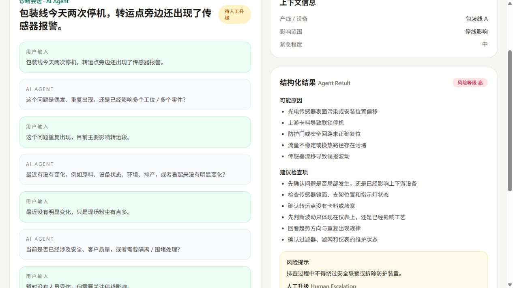

项目背景 Project Background
制造现场的问题描述往往并不完整，经验知识分散在文档、记录和老师傅经验里，而且某些涉及高风险操作的建议并不适合由 AI 无限制直接输出。
所以这个项目的目标不是做一个“什么都能答”的机器人，而是设计一套有边界的问题处理流程，让系统能够先澄清、再检索、再判断、再建议，并在需要时升级人工。
面向制造现场异常处理场景，将问题输入、补充追问、知识检索、规则判断、处理建议、人工升级与案例沉淀串成一个可运行的 Agent 闭环。
本页面使用脱敏后的流程、重绘界面与 synthetic data 展示项目思路。 不包含任何公司内部代码、内部数据或保密资料。
这个项目的目标不是“尽量什么都回答”，而是把信息不完整的现场问题送进一个可追踪、可复核、可控的处理流程。
现场人员先输入问题描述，但这些信息往往不完整，也缺少足够上下文。
系统先补充追问，而不是在信息不足的情况下直接猜测原因。
Knowledge Retrieval 与规则判断共同参与，决定系统可以输出哪些建议。
系统给出可能原因、建议检查项和下一步处理建议，并标明来源依据。
对于高风险或低置信度输出，系统需要限制、提示，或阻止直接放行。
当信息不足、风险较高或知识覆盖不够时，系统需要升级人工，而不是假装自己有把握。
处理结果与 Bad Case 可以回流到知识审核、测试集和后续迭代中，形成持续改进闭环。
制造现场的问题描述往往并不完整，经验知识分散在文档、记录和老师傅经验里，而且某些涉及高风险操作的建议并不适合由 AI 无限制直接输出。
所以这个项目的目标不是做一个“什么都能答”的机器人，而是设计一套有边界的问题处理流程，让系统能够先澄清、再检索、再判断、再建议，并在需要时升级人工。
当现场信息不充分时，系统应该先围绕现象、时点、设备状态和上下文做补充追问，而不是直接给出原因判断。
Ask before assuming
Knowledge Retrieval 可以帮助系统找到相关知识，但真正能不能输出建议，还需要结合规则判断、场景边界和风险约束。
Retrieval alone is not enough
对于未经审核的高风险动作，尤其是可能影响设备、工艺或质量的定量调整建议，系统不应像普通低风险建议一样直接输出。
Do not directly emit high-risk actions
一个真正可用的企业 Agent，必须知道什么时候应该停下来、提示风险，或者在知识不足、风险较高时把问题升级给人工处理。
Human-in-the-loop
下面的交互界面用于公开展示，均为重绘后的 Demo UI，数据也为虚构示例，用来说明系统行为与产品逻辑，而不是展示内部系统原界面。

公开 Demo 为脱敏重实现版本，使用虚构数据，不包含公司内部资料。截图展示多轮追问、Knowledge Sources、Risk Level 与 Human Escalation 的真实运行界面。
当前证据不足以支持直接进行定量参数调整。
如果现场检查仍无法确认原因，请升级至相关工程人员审核。
这个项目更关注 Agent 在真实流程中的行为质量：是否会追问、是否有来源、是否触发风险边界、是否知道何时升级人工，以及是否能够留下可复盘的处理记录。
覆盖正常问题、信息不完整问题与边界场景。
记录错误假设、缺失说明与不安全输出。
检查知识来源是否清晰、可追溯。
检查系统是否正确触发风险提示与边界限制。
检查人工升级条件是否在关键场景被正确触发。
检查处理过程和结果是否能被后续复盘利用。
已串起问题输入、多轮澄清、结构化输出、风险提示与人工升级的展示闭环。
围绕信息缺失、来源不清与高风险输出等场景，持续补充测试样例与复盘记录。
当前页面展示的是脱敏后的产品逻辑，重点验证 Knowledge Retrieval、规则判断与升级策略的配合方式。
仍在围绕评估方式、边界场景和结果沉淀方式做迭代优化，而不是停留在概念说明。
企业 Agent 的价值，不只在于回答问题，而在于它能否真正进入业务流程：信息不足时会追问，建议有来源，高风险场景有明确边界，知识不足时能够升级人工。
同样重要的是，处理过程和结果能够沉淀下来，支持后续复盘和知识迭代。对企业 Agent 来说，知道什么时候不应该直接回答，和回答本身同样重要。